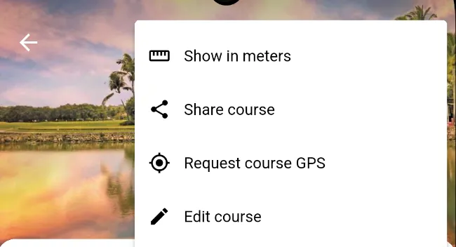
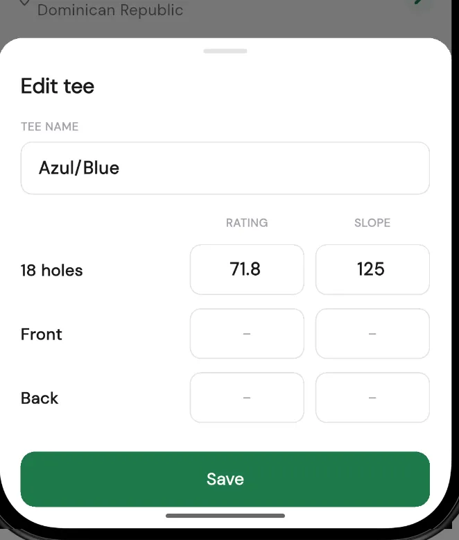
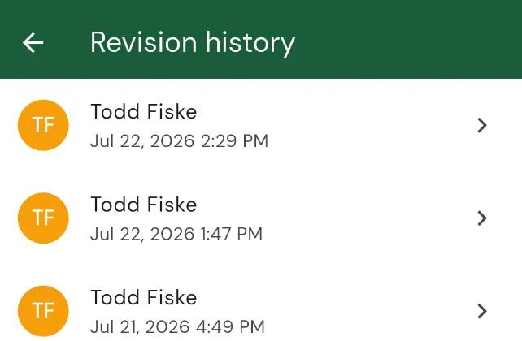

Editing a course
Course details in Squabbit are not set in stone. If a tee is missing, a rating is wrong, or the yardages don't match the card, anyone signed in can fix it. This guide walks through editing tees, ratings, slope, per-hole yardages, par and stroke index, fixing yardages entered in the wrong unit, requesting GPS, viewing the edit history, and requesting that a course be deleted.

Courses are shared
Before you edit anything, it's important to know that Squabbit courses are shared. There is one copy of each course, and everyone who looks it up or plays it sees the same details. When you start editing, Squabbit shows a caution dialog titled This course is shared that reads: "Editing changes the course details for everyone, not just you." It also spells out that "Your edits to tees, yardages, pars and stroke indexes update this course for every player and tournament that uses it." Tap Edit for everyone to continue, or Cancel to back out.
Because edits are shared, take care to enter accurate values. If something looks wrong later, the edit history lets you see who changed what and, if needed, put it right.
Opening a course to edit it
Open the course you want to change, then:
- Tap the menu button in the top corner and choose Edit course.
- Confirm the This course is shared dialog by tapping Edit for everyone.
- The page switches to Edit course mode, with a Save button in the top corner.
In edit mode you can tap the course name or location to change them, edit the scorecard values, and open more options (such as fixing units, viewing history, or requesting deletion) from the menu.
Editing tees
A tee is a set of tee boxes (for example Gold, Blue, or White) with its own rating, slope, and per-hole yardages. In edit mode, use the tee selector to switch between tees, or open the tee options to add, edit, copy, or delete a tee. Editing a tee opens the Edit tee sheet, where you can set:
- Tee name (for example Gold, Blue, or White).
- Rating and Slope. On an 18-hole course you can enter these for 18 holes, Front 9, and Back 9. On a 9-hole course you enter a single Course rating and slope.
Tap Save on the sheet to keep the tee's changes. Ratings and slope must fall within the valid ranges (Squabbit shows a message if a value is out of range).

Per-hole yardages
Each tee has its own yardage for every hole. In edit mode, tap a yardage cell on the scorecard for the tee you're editing and enter the distance for that hole.
Editing par
Par is shared across tees (every tee plays the same par on a given hole). To change it, tap the par cell for a hole. A dialog titled Enter par for hole appears with buttons for the common par values; tap the one you want and it's applied immediately, or tap Cancel to close without changing it.
Editing stroke index
The stroke index (also shown as handicap, or S.I. on the scorecard) ranks the holes from hardest to easiest for handicap allocation. Tap a stroke-index cell for a hole to open the Enter handicap for hole dialog, pick the number for that hole, and it's applied. Each stroke index should be used only once across the course.
Fixing yardages entered in meters vs yards
Sometimes a course is entered with distances in the wrong unit, so every hole looks too long or too short. To fix the whole card at once, open the menu in edit mode and choose Fix meters and yards. The dialog lets you tell Squabbit that the numbers are actually in the other unit:
- Hole distances shown in yards are actually the distances in meters.
- Hole distances shown in meters are actually the distances in yards.
Pick the option that matches your situation (Squabbit shows a short example of how Hole 1 would change), then tap Fix all holes to apply the correction across every hole.
Viewing the edit history
Because courses are shared, Squabbit keeps a record of edits. In edit mode, open the menu and choose Revision history to see the list of prior edits. Each entry shows who made the edit and when. Tap an entry to open the revision details, where you can see exactly what changed, field by field (for example a hole's par, stroke index, yardage, or a tee's rating and slope).

On a revision's detail page you can:
- Revert to this version to restore the course to how it was at that point.
- Report this edit if it looks malicious.
Reporting a bad edit
If an edit looks like spam, vandalism, or otherwise abusive, open its revision and choose to report it. The Report malicious edit dialog explains that "Reports are sent directly to the Squabbit team for review. Use this only for genuinely malicious or abusive edits (e.g. spam, vandalism, obscene content)." Describe why you think the edit is malicious, then tap Submit. Please only report genuinely bad edits: false or abusive reports may result in your account being restricted.
Requesting GPS for a course
GPS hole data is what powers the map view and on-course distances. If a course doesn't have it, open the course, tap the menu, and choose Request course GPS (this option only appears when the course is missing GPS). Squabbit tries to import the GPS data automatically:
- If it succeeds, you'll see GPS imported confirming the data was added, and the map and distances will work.
- If it can't be imported automatically, you'll see Import not available, letting you know the GPS data may need to be entered manually.
Requesting deletion of a course
If a course should be removed entirely (for example it's a duplicate or no longer exists), open the menu in edit mode and choose Request deletion. This asks that the course be permanently removed for all users, so it's not the right tool if you simply want a different course for your event (in that case, change the course selection instead).
On the Request deletion reason screen, pick why it should be deleted:
- Duplicate course: you'll then search for and select the existing course that should be kept, and Squabbit shows which course will be deleted and which will be kept before you submit.
- Course no longer exists: submits the request with that reason.
- Other: enter a short reason and submit.
The Squabbit team reviews deletion requests before anything is permanently removed.